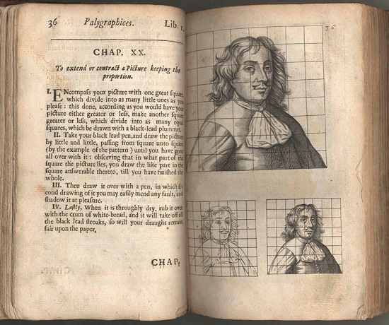

The Grid method!
The grid method allows you to break up an image into a regular grid and thereby make it easier to gauge proportions and relationships of shapes and space
I built this app as a quick way to put a grid over an image
I hope you enjoy it!
see more of my projects here:
Pete-Andrew GitHub
Albrecht Dürer, The Goddess and the Craftsman, 1525
